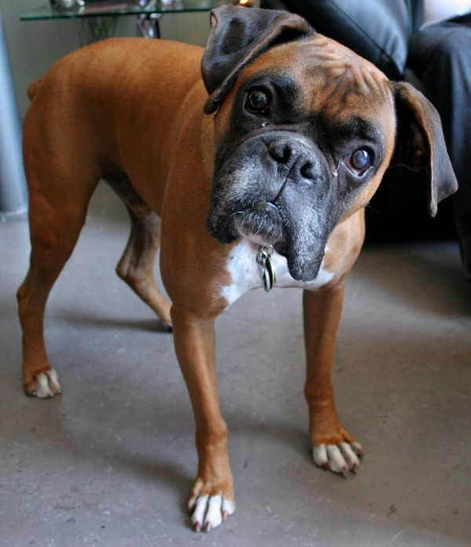

jayden bell woof project
The Boxer is a medium-sized, short-haired breed of dog, developed in Germany. The coat is smooth and tight-fitting; colours are fawn, mahogany, black or brindled, with or without white markings, and white. The Boxer was developed in Germany in the 19th century. The Boxer's ancestors were two German mastiff type dogs, the Bullenbeiszer and the Barenbeiszer. They were later crossed with the powerful ancestors of the Mastiff and Bulldog. Early Boxers were used for dog fighting, bull baiting, cart pulling, as cattle dogs, to round up livestock and to catch and pin wild boar and bison until hunters could arrive.
They later became popular theater and circus dogs. The first Boxer studbook was started in 1904. Up until then the dogs varied widely in looks and size. The Boxer is known for the way it uses its front legs to bat at its opponent, appearing to be boxing, most likely giving the dog its name. Some of the Boxer's talents are watchdog, guarding, police work, military work, search and rescue, competitive obedience, Schutzhund and performing tricks. Breeders are breeding two types of Boxers, the German Boxer and the American Boxer. German Boxers have bigger heads and are generally more muscular than American Boxers.